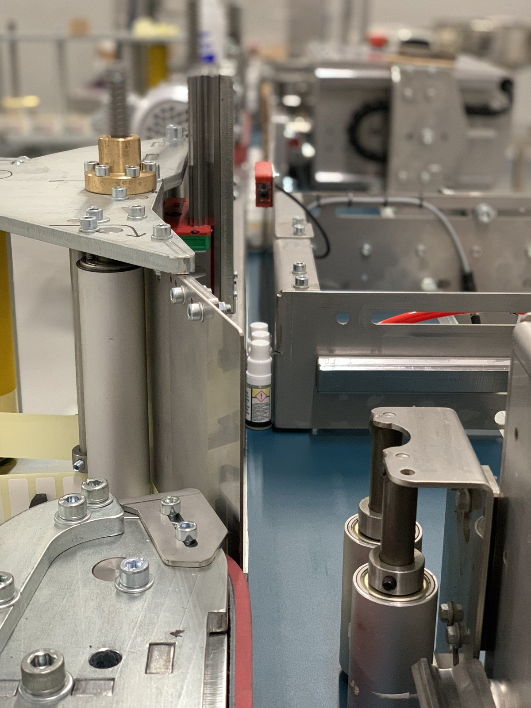
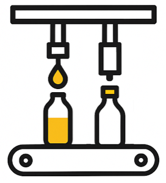
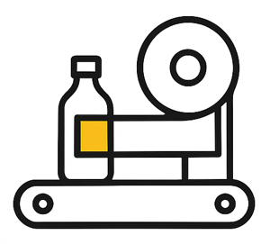
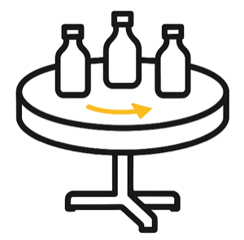
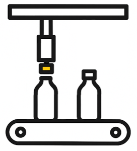
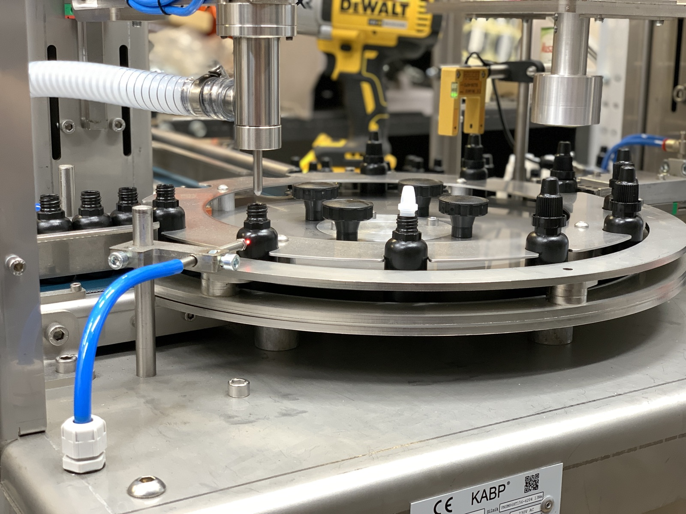

Want to produce faster while staying on budget?
It's worth checking which solution works best for your case. We design and assemble a machine tailored to your product – in Poland, at prices competitive with equipment imported from China.

Custom-built machines – filling, capping, labeling
Every machine is built with a specific product, process, and the person who will operate it in mind.

Filling-capping machines
Combines filling and capping in one device – consistent fill volume and a tight seal on every container.

Automatic labelers
Precise, repeatable label application – every unit looks identical, with no downtime.

Rotary tables
Improve bottle and container flow, minimize downtime, and increase operator ergonomics.

Cap feeders
Full automation of cap feeding – less manual labor, lower risk of errors.
Industrial printers New
Packaging marking and coding, integrated directly with the packaging line.
Custom solutions New
Non-standard process? We design equipment tailored to your specific production line.

Looking for machines designed and assembled in Poland, at prices competitive with equipment imported from China?
Too many companies waste time and money trying to adapt off-the-shelf solutions to unique needs. We do the opposite – we listen first, then we design.
Here, every machine is built with a specific product, process, and the person who will operate it in mind.
As a direct manufacturer, we help businesses build technology that actually works. We show that a tailored approach isn't a luxury – it's the foundation of modern production.
Machines already working for our clients
Photos from our workshop and installations – we design and assemble every device ourselves.
Frequently asked questions
Can I realistically automate production on a budget of 50,000–150,000 PLN?
Yes. In this range you can implement basic machines – e.g. filling machines, cappers, or labelers – that immediately improve production quality and profitability. These aren't solutions for large corporations, but for small companies taking their first step toward automation.
What you gain:
- fewer human errors,
- faster order fulfillment,
- the ability to take on larger contracts without hiring more staff.
As a local manufactory, we design equipment to be affordable and matched to your process. If you want to find out which solution will work best for your company, get in touch – we'll prepare a quote tailored to your budget.
Why does the lack of automation generate costs?
At first glance, skipping investment in machinery might look like a saving. In practice, production based solely on manual labor is slower, more error-prone, and harder to scale.
Consequences of no automation:
- higher risk of human error,
- limited ability to speed up production,
- dependence on worker availability.
Our solutions show that even on a small budget, you can significantly increase production profitability and quality.
Are Chinese machines competitive?
No. While imported equipment is tempting on price, it often means no service support, difficulty modifying the equipment, and long waits for parts. For a small company, that's a risk that can paralyze production and ultimately cost double when a faulty machine has to be replaced.
Risks of importing:
- no local support,
- long wait times for parts,
- no ability to customize for your product.
As a Polish manufactory, we offer competitively priced solutions with full local support. You can meet the actual person who builds your machine and be confident it's built for you. Get in touch to see what solutions are available within your budget right away.
Can I start production if I only have a product idea?
Yes. Many of our clients started with just an idea – for a drink, a cosmetic, or a food product – and only then checked what machines they'd need. It's a natural stage in which it's worth understanding costs and options before production begins.
What you can do:
- check the prices of basic machines,
- find out which processes can be automated right away,
- assess whether your idea is viable in practice.
We're a manufactory that supports idea-makers from the very first step. If you have an idea but aren't producing yet, get in touch – we'll show you what's possible within your budget.
Can I automate production gradually?
Yes. You don't have to invest in a full production line right away. You can start with a single process – e.g. filling or labeling – and gradually expand your machinery. It's a safe approach for companies that want to grow step by step.
Benefits of gradual automation:
- lower financial risk,
- the ability to test solutions,
- easy scaling as order volume grows.
We design modular machines that can be expanded in the future. If you want to start with one process and check the costs, get in touch – we'll prepare an offer matched to your stage of growth.
How long until an automation investment pays for itself?
The best approach is to calculate the cost of manual labor and compare it to the cost of the machine. In many cases, the investment pays for itself in under a year.
Typical savings:
- reduced errors and material waste,
- faster production pace,
- the ability to take on larger orders.
If you'd like to see how the numbers work out for your product, get in touch.
Let's talk about your production
Tell us about your product and process – we'll prepare a proposal tailored to your budget.
Let's talk →